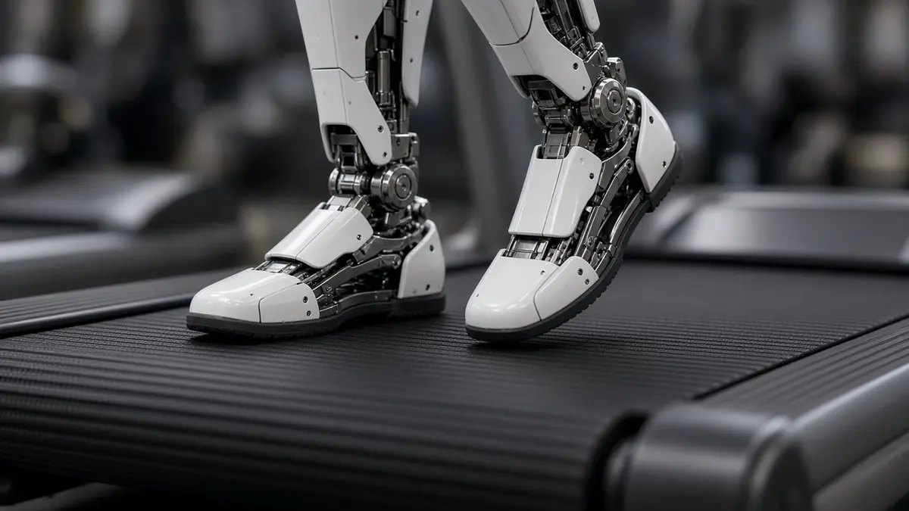
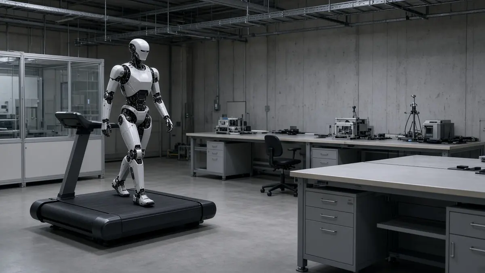

Trending Figure
Why Figure's nine-day Figure 03 treadmill test is getting attention
Short answer: Figure AI CEO Brett Adcock said on X on 19 October 2026 that a Figure 03 humanoid had walked on a treadmill for nine straight days, covering 348 miles and about 1.2 million steps in a test he said began as a side project to stress the robot for failures. The figures come from the company's CEO and have not been independently verified.
Interesting Engineering reports that a time-lapse shows the robot walking on a treadmill inside a testing facility with a power cable attached. Adcock's post ended with "Let's see how long it can go", which suggests the run was still going when he posted.

Both Interesting Engineering and TechRepublic note that details are unclear: whether one robot completed the whole run, how power and charging were handled, and whether there were interruptions or maintenance. TechRepublic says the result should not be read as nine days on a single battery charge.

For context, Interesting Engineering and TechRepublic recall Figure's May 2026 livestream of package sorting, which ran for about 200 hours and processed 249,560 packages, with several robots rotating through the task. The treadmill test instead emphasises accumulated walking distance and steps.